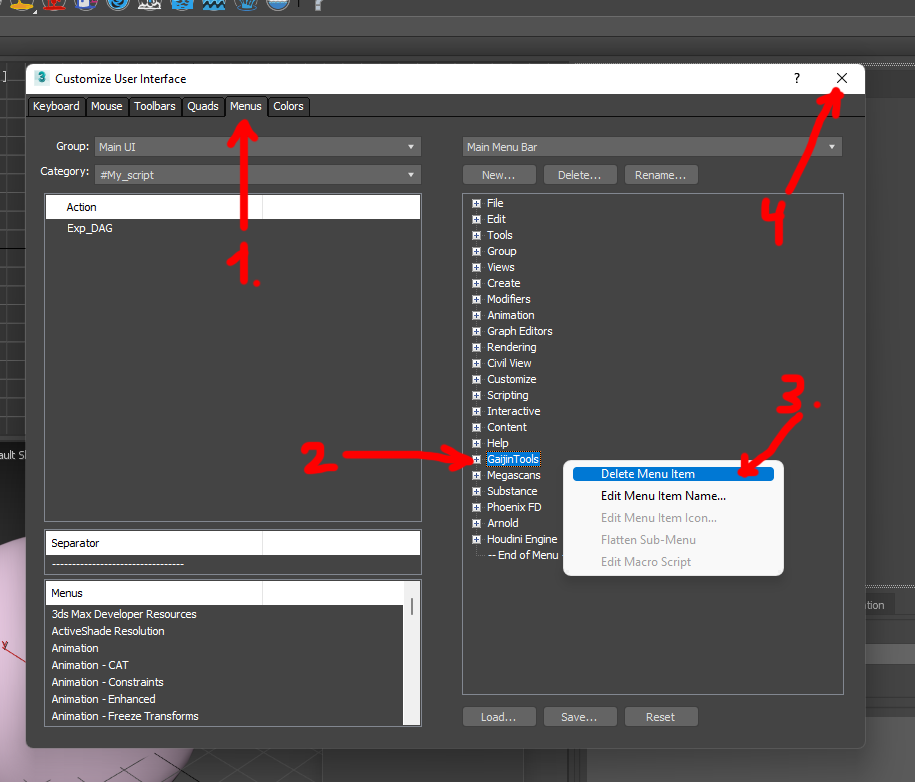
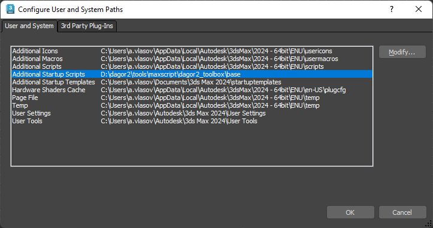

Installation
Important
If you have already installed any of the Dagor 2 3ds Max Tools, you should uninstall the previous version.
If you are installing the tools for the first time, skip the Uninstallation Steps section.
Uninstallation Steps
Go to Customize User Interface.
Choose Menus tab.
Delete GaijinTools from Main Menu Bar.
Now you can close the Customize User Interface window.

Close the 3ds Max.
Remove all GJ_Tools*.mcr files from usermarcos directory. It should be located here by default:
C:\Users\USER_NAME\AppData\Local\Autodesk\3dsMax\YOUR_3DS_MAX_VERSION\ENU\usermacros
Remove all startup scripts, that you did not added yourself. Default path:
C:\Users\USER_NAME\AppData\Local\Autodesk\3dsMax\YOUR_3DS_MAX_VERSION\ENU\scripts\startup
Clean Installation
For a clean installation, follow these steps:
Open Customize ▸ Configure User and Subsystem Paths.
Go to User and System tab.
Select the Additional Startup Scripts line and click the Modify… button.
Specify path to:
.../dagor2_toolbox/base
Confirm the changes by clicking OK.

Restart 3ds Max. The script will automatically add the Gaijin Tools menu right after the Help menu.